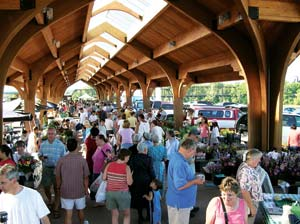
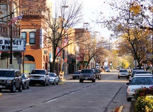

This west central Wisconsin city is not a huge tourist destination, and that’s OK with most of its residents. What they like about Eau Claire is its leisurely pace of life, the safety of its streets, and the fact that it was recently named one of the 100 best places to raise children by America’s Promise Alliance, an organization that works to ensure the well-being of children and youth. Eau Claire resident Zeus Stark says, “Living here is kind of like you went back in time 20 years. People take the time to look you in the eye when they talk to you.”
City leaders took the time to ask citizens, “What do we have here that’s worth protecting and enhancing? What does Eau Claire need in order to be a better place?” In brainstorming sessions called “The Idea Lounge,” participants identified the confluence of the Chippewa and Eau Claire Rivers as one of the city’s finest assets - a valuable link to the area’s heritage - even though its industrial years (sawmills, coal tar plant, battery factory, etc.) had left deep scars. Residents and officials agreed that downtown Eau Claire needed a grocery store and a park in which people can gather. A new strategic vision was born.
It didn’t happen overnight, but a decade after the vision first came together, it’s a reality. Now residents from six surrounding neighborhoods ride bikes and walk to the redeveloped Phoenix Park. Every Thursday from June through September, the concert series “Sounds of Summer” draws crowds to the park, and the new farmers market is a huge success. It draws up to 5,000 community members every Saturday and Tuesday to support local growers and weave a community culture.
Do you live in Eau Claire? Have you visited? Please post your comments below.
Population: 62,570
Climate: Chilly winters and warm, potentially humid summers. January average temperature: 14 degrees. July average: 72 degrees.
Median House Value: $139,900
Natural Assets: Chippewa River State Trail, a spectacular riverside trail from Eau Claire to the city of Durland. Access to Wisconsin’s 15,000 lakes and 44,000 miles of rivers and streams.
Sustainable Initiatives: Extensive use of bicycles and bicycling infrastructure. Methane generator at a local dairy operation and increasing use of solar energy.
|
 NICK MEYER The Eau Claire, Wis. Farmers Market |
 JEREMY GRAGERT Barstow Street in Eau Claire, Wis. |
|